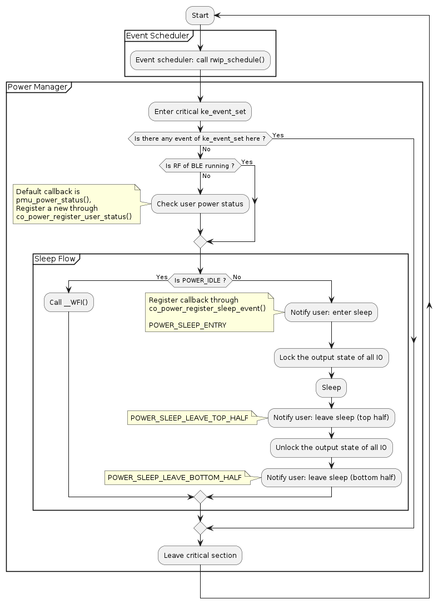

Power Mode
OM6621P has 5 power modes: active mode, idle mode, sleep mode, deep sleep mode, ultra deep sleep mode
- In the active mode and idle mode, the clock of digital modules (Timer, UART, SPI, PWM …) can be enabled or disabled independently. The power of analog modules which have independent power domain can also be enabled or disabled by application.
- In the idle mode, the clock of processor is gated and all of the interrupts can wakeup system.
- In the sleep mode, the interrupts of GPIO, sleep timer and BLE can wakeup the system.
- In the deep sleep mode, the interrupts of GPIO can wakeup system. And if 32k is running, RTC also can wakeup system. BLE stack does not work in the deep sleep mode.
- In ultra deep sleep mode, wakeup source is similar to deep sleep. It also power off all SRAM, the wakeup will trigger system reboot. Use function co_power_ultra_sleep_mode_enable() to enable it.
The following table shows the difference between the 5 modes of OM6621P:
| Mode | CPU Clock | CPU Power | Wakeup Source | Have Power Modules |
| Active | ON | ON | N/A | All Modules (**) |
| Idle | OFF | ON | All Interrupts | All Modules (**) |
| Sleep | OFF | OFF | GPIO, Sleep-Timer, RTC | SRAM, GPIO, 32K, BASEBAND, RTC(option) |
| Deep Sleep | OFF | OFF | GPIO, RTC | SRAM, GPIO, 32K(option), RTC(option) |
| Ultra Deep Sleep | OFF | OFF | GPIO, RTC | GPIO, RTC(option) |
(**) The power and clock of periphals which are not used can be closed.
The following table shows how to enter the different power modes:
| Mode | How |
| Active | CPU handles something (event of ke_event_set(), the RF of BLE is configuring, handle IRQ, ...) |
| Idle | Use API pmu_lowpower_prevent() to prevent sleep (some drivers have been called).
(or) IO is in wakeup state (reference pmu_wakeup_pin_set).
(or) The RF of BLE is running. |
| Sleep | There are no pmu_lowpower_prevent().
(and) IO is not in wakeup state.
(and) The RF of BLE is not running. |
| Deep Sleep | The conditions of sleep mode are met.
(and) There is no BLE (no adv/connection/scan) running.
(and) There is no 32k timer (co_timer, WDT) running. |
| Ultra Deep Sleep | The conditions of deep sleep mode are met.
(and) function co_power_ultra_sleep_mode_enable() is enabled. |
(or) is logical OR(). (and) is logical AND.
The following table shows the minimum requested power mode for each modules:
| Modules | Minimum Requested Power Mode |
| DMA | Active |
| ADC | Idle |
| CPM | Idle |
| Encoder | Idle |
| I2C | Idle |
| I2S | Idle |
| KPP | Idle |
| SF | Idle |
| SPI | Idle |
| Timer | Idle |
| UART | Idle |
| WDT | Idle |
| Pinmux | Idle |
| Baseband | Sleep |
| RTC | Sleep |
| GPIO (**) | Idle |
| GPIO(in PMU) | Deep Sleep |
| PMU | Deep Sleep |
(**) The GPIO module consists of two parts, one part located in the PMU module, the other part does not belong to PMU and it does not working in sleep mode.
Power Control
Power mode control depends on user setting, peripherals’ status and BLE’s status.
- The user power mode setting is managed by user who can use API pmu_lowpower_prevent() / pmu_lowpower_allow() to allow or prevent sleep.
- Before sleep, the sleep status is checked. That can use API co_power_register_user_status() to customized, and default checking callback is pmu_power_status().
- The most of the peripherals’ status is managed by drivers. Actually the driver knows when the peripherals cannot enter into sleep mode. For example when the ADC is sampling, the ADC driver knows the system cannot enter into sleep mode at this time. User does not take care of the peripherals’ status.
- Some peripherals require user to manage. For example, when UART receive data, the driver does not know when the long packet is recived. So user should tell system the information.
- The status of BLE is managed by BLE stack.
- Note
- When the system is waked up from sleep mode, all register setting of some peripherals are lost and the peripherals need to be reconfigured. Those reconfigured peripherals include: GPIO, Timer, UART, SPI, DMA, ADC, I2C, ....
System Scheduler and Power Manager Flow
The system scheduler and power manager are included in rwip_schedule() which reference Operating System. The flow is shown as follow:

System Scheduler and Power Manager Flow
- Note
- When system come into SLEEP mode, the CPU is powered down. So the debug interface (SWD) will be disconnected and KEIL losts connection. The function co_power_sleep_enable() can disable SLEEP mode for better debugging.
Reference Code
{
switch(state)
{
break;
hardware_init();
break;
break;
}
}
{
pinmux_init();
hardware_init();
pmu_gpio_wakeup_set(WAKEUP_GPIO_MASK, GPIO_FALLING_EDGE);
ble_stack_init();
......
}
void co_power_register_sleep_event(co_power_sleep_callback_t event_cb)
Register sleep event callback.
co_power_sleep_state_t
Sleep state.
@ POWER_SLEEP_LEAVE_TOP_HALF
@ POWER_SLEEP_LEAVE_BOTTOM_HALF
Event with sleep leaving (IO can be controlled immediately)
@ POWER_SLEEP_ENTRY
Event with sleep entering.
void pmu_select_32k(pmu_32k_sel_t clk32k)
pmu select 32k